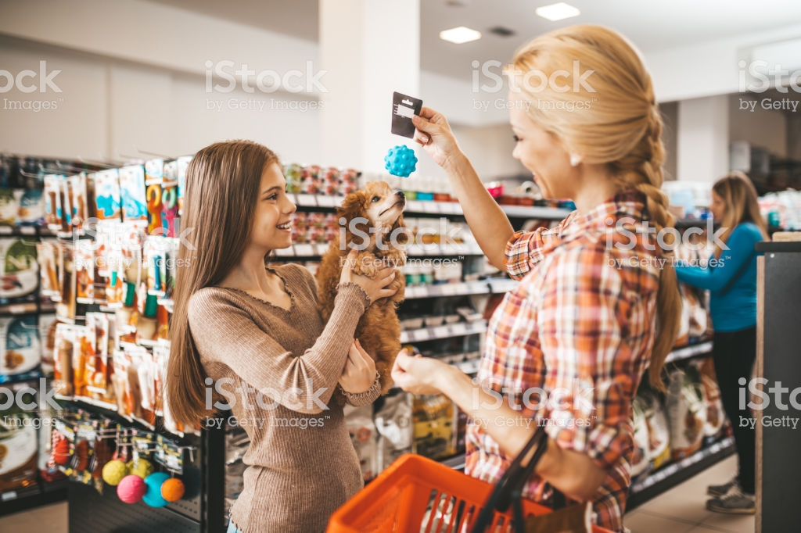

Durham House of Pets was established in 1975 by Peter Paul. Durham House of Pets originally only sold small pets that students could keep in their dorm rooms but has since expanded to selling larger pets, pet toys, apparel, and more!
Durham House of Pets is the best place around for great animals, great service, and great products. At DHP we ensure that all of the animals in the shop and fed, groomed, and taken care of properly. Each animal whether small or large is important to us here at DHP. Each of our employees are trained and educated on the different animals and how to handle them. DHP also has the largest selection of custom products out of all pet stores in Southern New Hampshire!